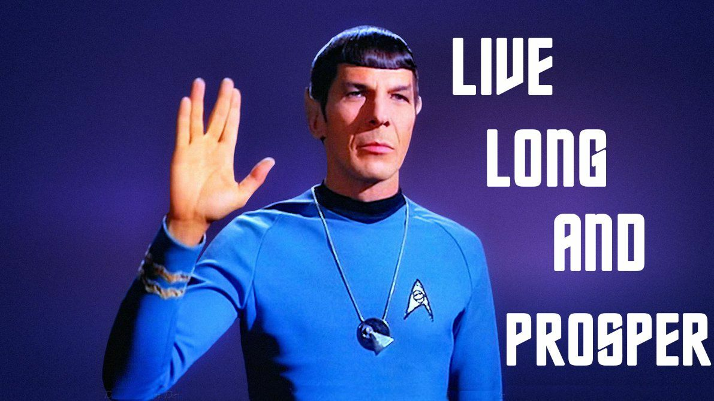

太多人对互联网的重投入一无所知
王福强
今天一朋友大清早给我打电话，我以为是什么事情， 原来是让我帮他balance下如何选择。其实他心里有谱儿，只是找我确认一下罢了。
总的来说， 问题的核心还是投入与收益。一个项目，如果你总包然后再外包出去， 价钱你是要兜底的，但是我这朋友左算右算好像都不赚钱，还可能要赔，所以， 才找我商量怎么选择。实际上，大部分非互联网行业的客户对于互联网或者软件系统的投入是没有概念的，觉得随便几十万上百万就可以自己搞系统了，这就好像当年某老板跟我说， “我投两个亿，你给我搞个淘宝”是一样一样的， 用专业术语来说，这个叫“ 侯士达定律”， 感兴趣的小伙伴可以自己去百度(/Google)一下，就当课后作业吧 ；）
互联网一直给人的印象是轻资产、来钱快， 但实际上并非如此， 互联网是一个重“资产”、重投入的行业，只不过投入都投向了传统概念里的不那么看重的地方，最主要就是“人”。
正好早上看FENNG大辉也发了个朋友圈：

从2017年我出来折腾（之前打工是不关心这个帐的）， 粗算人力总成本是人员工资 * 1.3， 到后面的1.6倍，到今天可能真的是翻到2倍了吧，所以， 你算一下就知道，互联网公司或者说软件公司，其实最核心的资产就是人，因为资金大部分都砸到了人身上。你就算养10个人的小团队，平均按最低的2万来算（已经预估很低了）， 一个小团队光人力成本一年也得三四百万，更不要说100人的团队或者阿里头条这种几万人还要加上超溢价的工资。
所以说， 互联网根本就不轻资产， 而是一个重度投入、资金密集型的产业，为什么需要资本加持？ 这种投入力度， 绝对阶段性缺钱啊！只不过大多数非互联网行业人士对此一无所知，只是在外围看热闹， 只是从自己行业来揣度罢了。
为什么人这么贵？

软件行业一个好的人，要抵得上10个-50个不好的人，所以，你就得给好的人更多的钱，否则，市场摆在那里，好的人就跑到别人的船上去了。 什么样的军队能打胜仗？ 精兵强将！ 人数多是没用的，人越多，单兵素质差都可以先不谈，组织的问题就越多，光内部的问题就搞死你，还谈什么对外的战力？ 商场即战场， 跟带兵打仗其实一样一样的，兵马未动粮草先行，没有粮草， 再牛逼的将帅也打不了胜仗，更不要说持续攻城略地、抢增量了。
实际上，从微软那个年代开始（2000年以前）， 一家软件公司 1 的典型资产负债表结构就是人力投入占大头儿，几十年的延续下来，依然如此，软件行业是一个用人来冲击天花板、用软件来夯实地基的行业，软件固化和夯实的地基，再由人来构建更高的台阶， 周而复始，生生不息…

所以，奉劝各位老板，别动不动就自己搞系统，时间和组织协同先撇开不谈，你的企业的核心竞争力是软件嘛？ 软件公司的核心竞争力才是软件，你公司的核心竞争力应该不是，千万别闲着没事儿做各种“错配”的事情。让专业的人专业的公司做专业的事儿不好吗？ 软件公司做一次，可以通过多次销售来补齐成本收益的短板，你做一次，就只能自己用，尤其是业务系统和管理系统， 很多都是根据企业自身特点搞的，根本没有可复制性，否则，现在的SaaS厂商天天喊NoCode， 天天喊Codeless干嘛？ 还不是让各个业务方逼的？ 谁都要定制，谁都要不一样， 软件公司要是真的客户第一， 这成本投入都不是做商业了，那是做慈善那！
给够了钱，我可以让你Don’t Make Me Think， 给不够钱，我就只能搞NoCode，Make You Think了， 其实也就是那么回事，各自屁股不一样，想要服务好？

中国的互联网公司不一定都偏软件，中国靠业务起家的互联网公司软件只是在辅助完成信息化的增强，数字化也好，DT时代也罢，都是老马忽悠的好听，从来都是信息化，从来都是信息，从来都是财富公式的底层逻辑↩︎
「福强私学」来一个？
「福强私学」, 一部沉淀了个人成长、技术与架构、组织与管理以及商业上的方法与心法的百科全书。
开天窗，拉认知，订阅「福报」，即刻拥有自己的全模态人工智能。